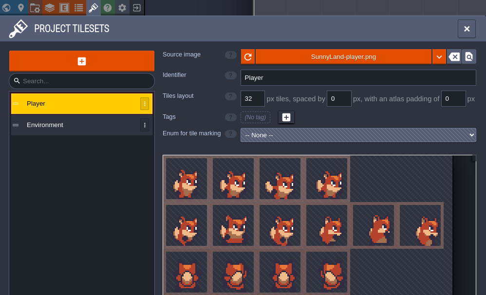
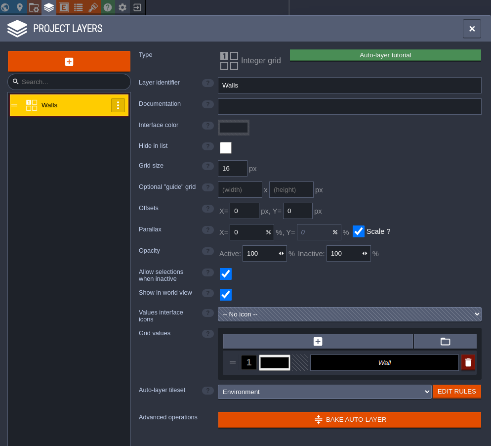
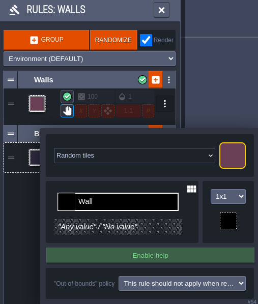
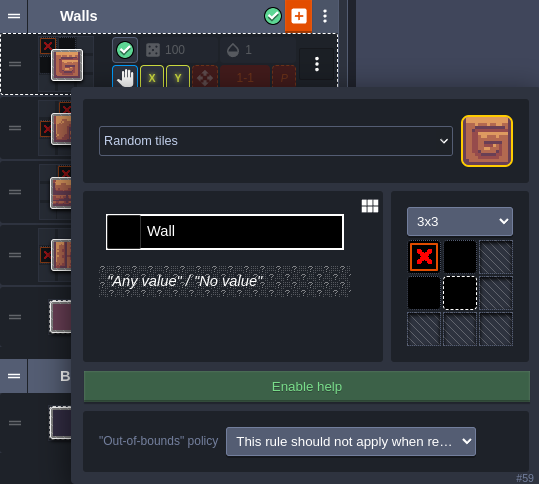
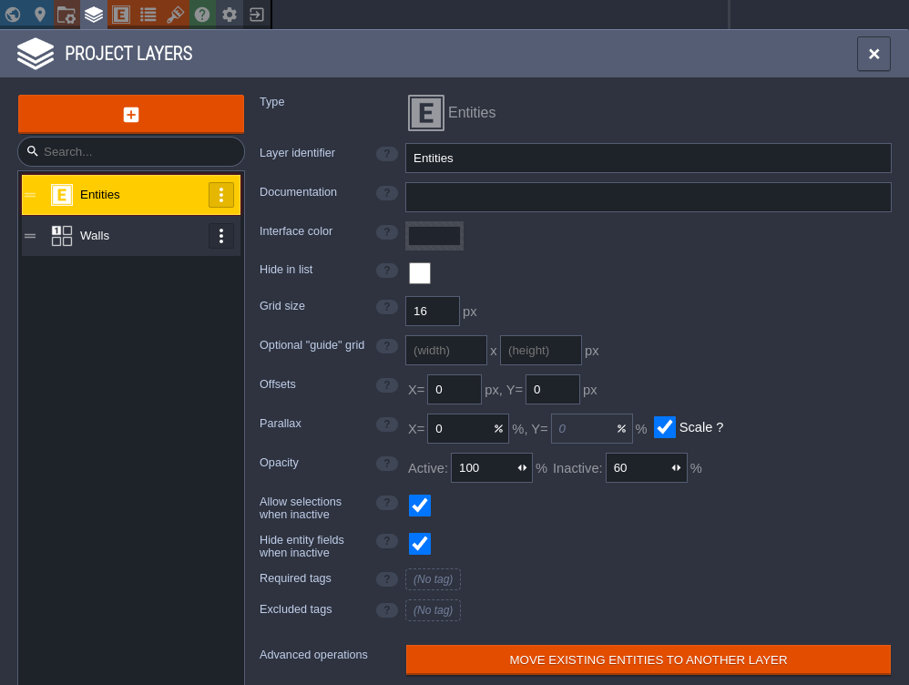
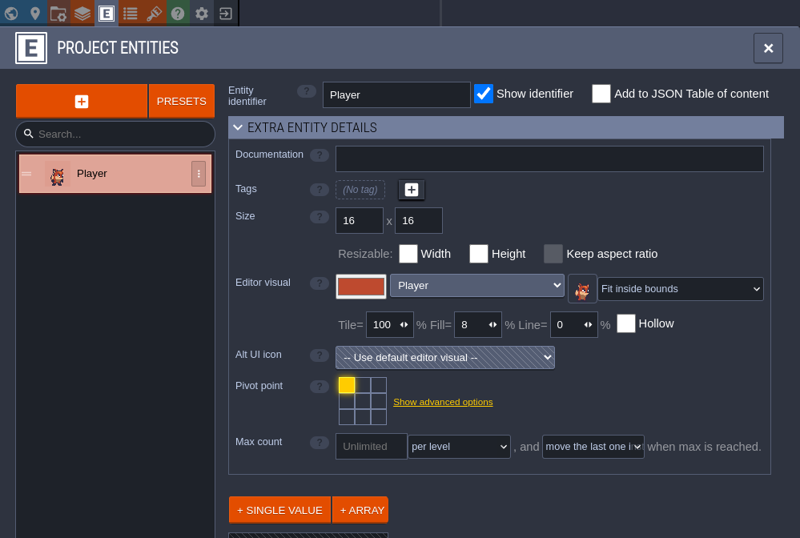
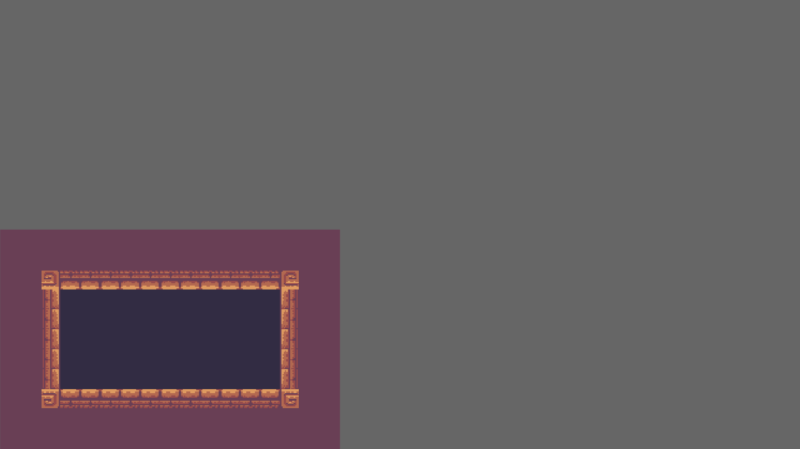

Introduction
bevy_ecs_ldtk
bevy_ecs_ldtk is an ECS-friendly LDtk plugin for Bevy.
It allows you to use LDtk projects as an asset, spawn levels, and insert bevy components/bundles on LDtk entities/tiles.
This plugin is ECS-friendly, partly for its internal usage of ECS that provides extra functionality to users, and partly for its usage of bevy_ecs_tilemap for rendering tilemaps.
This is all behind an ergonomic API, providing low-boilerplate solutions to common use cases.
For less common use cases, strategies that leverage this plugin's ECS constructs are also available.
This book
This book is a work in progress, but aims to provide the following pieces of documentation:
- tutorials: lessons detailing the creation of simple games from start to finish
- explanation: clarification of concepts and strategies employed by
bevy_ecs_ldtk, including details about how it works and why - how-to guides: recommended solutions to common problems, as well as migration guides
This book is not an API reference.
For that, please refer to bevy_ecs_ldtk's documentation on docs.rs.
While this book aims to be comprehensive, it should also be easy to maintain and up-to-date.
This is why, in consort with the API reference, documentation for bevy_ecs_ldtk aims to satisfy The Grand Unified Theory of Documentation.
Furthermore, code snippets in this book are automatically tested by bevy_ecs_ldtk's CI wherever possible with the help of mdBook-Keeper.
This should help inform maintainers when changes to the plugin have made documentation out-of-date.
Deployment of this book to github pages is also performed by bevy_ecs_ldtk's CI automatically on new releases.
Splitting the documentation up this way means that this book is not necessarily meant to be read in order. Some chapters are intended to be read while working on your own project, while others are meant to be more like studying material. The following chapters are good jumping-off points for beginners:
Other resources
This book is not suitable documentation for bevy or LDtk. Some resources for learning Bevy include those listed on the Bevy website, as well as the unofficial Bevy Cheat Book. LDtk also provides documentation on its website.
bevy_ecs_ldtk's source code is available on github.
This repository also contains cargo examples, which can be run after cloning the repository using $ cargo run --example example-name.
These examples may be difficult to follow on their own, and many of their strategies are described in this book.
When viewing these examples, be careful to checkout the correct git tag for the version of the plugin you are using.
Some changes may have been made to the plugin or to the examples on the main branch that are not released yet, and trying to apply these to the version of the plugin you are using can lead to errors.
License
The pages of this book fall under the same license as the rest of the bevy_ecs_ldtk repository.
I.e., this book is dual-licensed under MIT and Apache 2.0 at your option.
The plain text of this license is available in the bevy_ecs_ldtk repository's LICENSE file.
Tile-based Game
In this tutorial you will make a tile-based game with LDtk levels. Game entities will be locked to a grid of tiles like sokoban, or snake. You will go through the process of creating an LDtk project, loading the project into bevy, and adding gameplay.
This tutorial does have an example associated with it in the bevy_ecs_ldtk repository:
$ cargo run --example tile_based_game --release
Prerequisites
You will need to perform the following setup/installations:
- Bevy project setup for the version specified in the compatibility chart.
- LDtk installation, for the version specified in the compatibility chart.
You will also need some simple assets:
- A tileset for the environment with at least a background tile, a wall tile, and a "goal"-ish tile.
- A tileset for the the player.
For these purposes this tutorial will use the environment/tileset.png and spritesheets/player.png assets respectively from SunnyLand by Ansimuz, licensed under CC0 1.0.
However, you will be able to follow this tutorial using any tilesets, so long as they have tiles appropriate for the above purposes.
Create your LDtk project
In this section, you will create a simple LDtk project suitable for tile-based gameplay. This project will have an IntGrid layer of walls, and an Entity layer for placing Player and Goal entities. It will also have AutoTile rules on top of the IntGrid layer defining the visuals of walls and backgrounds. If you already have an LDtk project suitable for tile-based gameplay - feel free to skip this section. However, note that some of the values specified in here will be used in the tutorial going forward, such as...
- the name/location of the file (
assets/tile-based-game.ldtk) - the identifiers of the Player and Goal entities (Player, Goal)
- the IntGrid value of walls (1)
For details about the tutorial in general, including prerequisites, please see the parent page.
Create empty project
Open the LDtk app and create a new project.
For this tutorial, name the project tile-based-game.ldtk, and save it to your Bevy project's assets directory.
Set the World layout
In the World tab - set the World layout to Horizontal. This will make levels have a clear linear relationship in the editor, rather than a geographical one.

Import tilesets
Add your environment/player tilesets to the project, in the Tilesets tab.
Make sure that the source image files for these tilesets are also in your Bevy project's assets directory.
Name the tilesets "Environment" and "Player" respectively.
For the SunnyLand assets - the Player tileset needs to have a tile size of 32 and the environment asset a tile size of 16.

Add IntGrid layer for walls
Add an IntGrid layer to the project, in the Layers tab. This layer will be used to define where the collisions are in the level. Call this layer "Walls". Make sure its grid size is 16. Finally, give it an Auto-layer tileset - pointing to the Environment tileset.

Define autotiling for walls and backgrounds
From the Walls layer definition, select EDIT RULES for the Auto-layer tileset. This is where you will define how LDtk should dynamically render the Walls layer of your levels based off the level's IntGrid values.
First, define a catch-all rule that will place the background tile if no other rules are matched first.
- Select + GROUP to add a new empty rule group, and name it Background.
- On the new group, select + to define the first rule.
- In the top-right of the rule definition - select the tile you want to use as the background.
- Since this is a catch-all rule, no changes to the rule-pattern are necessary.

Next, define a rule that will catch any wall tile. You will be able to define more complex rules on top of this to make walls prettier, but it's good to start with a generic one first.
- Create another new group, and name it Walls.
- Click + on the Walls group to create its first rule.
- Select the tile you want to use as a generic wall tile in the top-right.
- Set the rule to be 1x1, and left-click the rule-pattern to place a wall tile.

Now you will be able to place walls in your level and they will be automatically rendered using this tile.
The following rule is optional, and will define the tile used for the edges of walls - specifically horizontal edges.
- Create a new rule in the Walls group.
- Select the tile you want to use as the left edges of a wall.
- Use a 3x3 pattern, and place a wall tile in the center and a negative wall tile on the left (by right clicking the left-center tile). This will match any wall tiles that don't have a wall tile to their left.
- On this new rule inside the group, enable the X option. This mirrors the rule in the x-direction, so that it works for the right edges of walls as well.

You are welcome to add more rules to the Walls group with more complex patterns for defining the vertical edges or corners. This tutorial will not go into painstaking detail about creating these, but their definitions are shown below. One general recommendation is to order these rules from most-specific to least-specific, so that the rule matcher will resort to the catch-all rules last.
A vertical wall edge rule - mirrored in the Y direction:

An outer corner wall rule - mirrored in the X and Y directions:

An inner corner wall rule - mirrored in the X and Y directions:

Now you can enjoy placing walls in your level and watching LDtk auto-tile them for you!
Add Entity layer
Add an Entity layer to the project, again, in the Layers tab. This will be used to place less tiling-oriented game objects, like the player, or the goal. You do not need to make any modifications to the default entity layer for this tutorial, it should be called "Entities" and match the grid size of the Walls layer.

Then, in the Entities tab, add a Player entity. Be sure to name it "Player" and set its editor visual to use a tile from the Player tileset. This will be important in the next section of the tutorial. For the SunnyLand assets - you will need to manually set its size to 16x16 so that it fits in a single tile on the grid.

Lastly, add a Goal entity. Name it "Goal" and set its editor visual from a tileset as well. Again, this will be important in the next section of the tutorial.

Design some levels
In the following chapters, you will spawn this project in Bevy and implement gameplay code for it. The game will be simple - move the player around the grid, navigating the walls, and start the next level once they reach the goal. With this in mind, design a few levels for this game using the tools you have set up thus far.

Spawn your LDtk project in Bevy
In this section, you will load/spawn your LDtk project in Bevy, including spawning sprites for the LDtk entities. This tutorial will use the LDtk project created in the previous section. You are welcome to bring your own tile-based LDtk project to this tutorial, but some of the values specified in here are specific to the previous section, such as...
- the name/location of the file (
assets/tile-based-game.ldtk) - the identifiers of the Player and Goal entities (Player, Goal)
For details about the tutorial in general, including prerequisites, please see the parent page.
Set up minimal Bevy App
In the main function of your game, create a Bevy App with DefaultPlugins and LdtkPlugin.
This code snippet also sets bevy's texture filtering to "nearest", which is good for pixelated games.
use bevy::prelude::*; use bevy_ecs_ldtk::prelude::*; fn main() { App::new() .add_plugins(DefaultPlugins.set(ImagePlugin::default_nearest())) .add_plugins(LdtkPlugin) .run(); }
Spawn the camera and LdtkWorldBundle on startup
Create a startup system that spawns a camera entity and a LdtkWorldBundle entity.
The latter requires a Handle<LdtkProject>, which can be obtained by loading your LDtk project from the Bevy AssetServer resource.
This code snippet also doubles the scale of the camera and adjusts its transform to make the level slightly easier to view in 720p.
use bevy::prelude::*; use bevy_ecs_ldtk::prelude::*; fn main() { App::new() // other App builders .add_systems(Startup, setup) .run(); } fn setup(mut commands: Commands, asset_server: Res<AssetServer>) { let mut camera = Camera2dBundle::default(); camera.projection.scale = 0.5; camera.transform.translation.x += 1280.0 / 4.0; camera.transform.translation.y += 720.0 / 4.0; commands.spawn(camera); commands.spawn(LdtkWorldBundle { ldtk_handle: asset_server.load("tile-based-game.ldtk"), ..Default::default() }); }
Finally, insert the LevelSelection resource to tell the plugin to spawn the first level.
Construct the LevelSelection using its index method to select the first level (0-indexed).
use bevy::prelude::*; use bevy_ecs_ldtk::prelude::*; fn main() { App::new() // other App builders .insert_resource(LevelSelection::index(0)) .run(); }
Now, run the game with $ cargo run --release to see your first level spawning in Bevy!

Spawn sprites for your LDtk entities
You may have noticed that the Player and Goal are not rendered here. They are there, but they require a little more work to become visible.
Create a PlayerBundle and GoalBundle, each with an LdtkSpriteSheetBundle field.
You will develop these bundles a little bit more in the next chapter, but for now they will be similar.
Derive LdtkEntity for these bundles, and give the field a #[sprite_sheet_bundle] attribute.
This trait implementation defines how these bundles should be spawned by the plugin.
More specifically - they should be spawned as sprites identical to the entity's editor visual.
#![allow(unused)] fn main() { use bevy::prelude::*; use bevy_ecs_ldtk::prelude::*; #[derive(Default, Bundle, LdtkEntity)] struct PlayerBundle { #[sprite_sheet_bundle] sprite_sheet_bundle: LdtkSpriteSheetBundle, } #[derive(Default, Bundle, LdtkEntity)] struct GoalBundle { #[sprite_sheet_bundle] sprite_sheet_bundle: LdtkSpriteSheetBundle, } }
Finally, register these bundles to the app using register_ldtk_entity, and provide their LDtk identifier.
When the plugin spawns entities with these identifiers, it will use the registered bundle.
use bevy::prelude::*; use bevy_ecs_ldtk::prelude::*; fn main() { App::new() // other App builders .register_ldtk_entity::<PlayerBundle>("Player") .register_ldtk_entity::<GoalBundle>("Goal") .run(); } #[derive(Default, Bundle, LdtkEntity)] struct PlayerBundle { #[sprite_sheet_bundle] sprite_sheet_bundle: LdtkSpriteSheetBundle, } #[derive(Default, Bundle, LdtkEntity)] struct GoalBundle { #[sprite_sheet_bundle] sprite_sheet_bundle: LdtkSpriteSheetBundle, }
Now run the game again - the sprites will appear this time.

Add gameplay to your project
In this section, you will integrate gameplay to the Bevy/LDtk project created in the previous sections. This includes tile-based movement, collision, and level transitions. You are welcome to bring your own tile-based LDtk project to this tutorial, but some of the values specified in here are specific to the LDtk project created in this tutorial, such as...
- the IntGrid value of walls (1)
For details about the tutorial in general, including prerequisites, please see the parent page.
Add marker component and GridCoords to the player
In order to implement tile-based movement and tile-based mechanics, you'll need to deal with an entity's position in tile-space rather than just Bevy world translation.
bevy_ecs_ldtk provides a component that is suitable for this, and it has integration with the LdtkEntity derive.
Add the GridCoords component to the PlayerBundle, and give it the #[grid_coords] attribute.
The player entity will then be spawned with a GridCoords component whose value matches the entity's position in grid-space.
Also give it a Player marker component so that you can query for it more easily in future systems.
Derive Default for this component.
bevy_ecs_ldtk will use this default implementation when spawning the component unless otherwise specified.
#![allow(unused)] fn main() { use bevy::prelude::*; use bevy_ecs_ldtk::prelude::*; #[derive(Default, Component)] struct Player; #[derive(Default, Bundle, LdtkEntity)] struct PlayerBundle { player: Player, #[sprite_sheet_bundle] sprite_bundle: LdtkSpriteSheetBundle, #[grid_coords] grid_coords: GridCoords, } }
Implement tile-based movement
The player now has the components you will need to implement tile-based movement.
Write a system that checks for just-pressed WASD input and converts it to a GridCoords direction.
I.e., (0,1) for W, (-1,0) for A, (0,-1) for S, and (1,0) for D.
Then, add the new direction to the player entity's GridCoords component.
use bevy::prelude::*; use bevy_ecs_ldtk::prelude::*; #[derive(Component)] struct Player; fn main() { App::new() // other App builders .add_systems(Update, move_player_from_input) .run(); } fn move_player_from_input( mut players: Query<&mut GridCoords, With<Player>>, input: Res<ButtonInput<KeyCode>>, ) { let movement_direction = if input.just_pressed(KeyCode::KeyW) { GridCoords::new(0, 1) } else if input.just_pressed(KeyCode::KeyA) { GridCoords::new(-1, 0) } else if input.just_pressed(KeyCode::KeyS) { GridCoords::new(0, -1) } else if input.just_pressed(KeyCode::KeyD) { GridCoords::new(1, 0) } else { return; }; for mut player_grid_coords in players.iter_mut() { let destination = *player_grid_coords + movement_direction; *player_grid_coords = destination; } }
Update translation from GridCoords value
If you play the game at this point, you'll notice that the player entity doesn't appear to be moving at all.
The GridCoords component may be updating correctly, but the entity's Transform is what determines where it is rendered.
bevy_ecs_ldtk does not maintain the Transform of GridCoords entities automatically.
This is left up to the user, which allows you to implement custom tweening or animation of the transform as you please.
Write a system that updates the Transform of GridCoords entities when their GridCoords value changes.
bevy_ecs_ldtk does provide a utility function to help calculate the resulting translation - provided you know the size of the cells of the grid.
For the LDtk project set up in this tutorial using the SunnyLand tilesets, this grid size is 16.
use bevy::prelude::*; use bevy_ecs_ldtk::prelude::*; fn move_player_from_input() {} fn main() { App::new() // other App builders .add_systems( Update, ( move_player_from_input, translate_grid_coords_entities, ), ) .run(); } const GRID_SIZE: i32 = 16; fn translate_grid_coords_entities( mut grid_coords_entities: Query<(&mut Transform, &GridCoords), Changed<GridCoords>>, ) { for (mut transform, grid_coords) in grid_coords_entities.iter_mut() { transform.translation = bevy_ecs_ldtk::utils::grid_coords_to_translation(*grid_coords, IVec2::splat(GRID_SIZE)) .extend(transform.translation.z); } }
Prevent tile-based movement into walls
Movement works logically and visually now. However, you might notice that you can move into the walls of the level. To implement tile-based collision, you will need to add components to the walls to identify their locations, and check against these locations when trying to move the player.
Create a new bundle for the wall entities, and give them a marker component.
Derive LdtkIntCell for this bundle, and register it to the app with register_ldtk_int_cell and the wall's intgrid value.
This bundle actually only needs this one marker component - IntGrid entities spawn with a GridCoords without requesting it.
use bevy::prelude::*; use bevy_ecs_ldtk::prelude::*; fn main() { App::new() // other App builders .register_ldtk_int_cell::<WallBundle>(1) .run(); } #[derive(Default, Component)] struct Wall; #[derive(Default, Bundle, LdtkIntCell)] struct WallBundle { wall: Wall, }
There are a lot of ways to go about implementing the collision systems.
Naively, you could query for all of the Wall entities every time the player tries to move and check their GridCoords values.
In this tutorial, you will implement something a little more optimized: caching the wall locations into a resource when levels spawn.
Create a LevelWalls resource for storing the current wall locations that can be looked up by-value.
Give it a HashSet<GridCoords> field for the wall locations.
Give it fields for the level's width and height as well so you can prevent the player from moving out-of-bounds.
Then, implement a method fn in_wall(&self, grid_coords: &GridCoords) -> bool that returns true if the provided grid_coords is outside the level bounds or contained in the HashSet.
use bevy::prelude::*; use bevy_ecs_ldtk::prelude::*; use std::collections::HashSet; fn main() { App::new() // other App builders .init_resource::<LevelWalls>() .run(); } #[derive(Default, Resource)] struct LevelWalls { wall_locations: HashSet<GridCoords>, level_width: i32, level_height: i32, } impl LevelWalls { fn in_wall(&self, grid_coords: &GridCoords) -> bool { grid_coords.x < 0 || grid_coords.y < 0 || grid_coords.x >= self.level_width || grid_coords.y >= self.level_height || self.wall_locations.contains(grid_coords) } }
Now, add a system that listens for LevelEvent::Spawned and populates this resource.
It will need access to all of the wall locations to populate the HashSet (Query<&GridCoords, With<Wall>>).
It will also need access to the LdtkProject data to find the current level's width/height (Query<&Handle<LdtkProject>> and Res<Assets<LdtkProject>>).
use bevy::prelude::*; use bevy_ecs_ldtk::prelude::*; use std::collections::HashSet; const GRID_SIZE: i32 = 16; #[derive(Default, Resource)] struct LevelWalls { wall_locations: HashSet<GridCoords>, level_width: i32, level_height: i32, } impl LevelWalls { fn in_wall(&self, grid_coords: &GridCoords) -> bool { grid_coords.x < 0 || grid_coords.y < 0 || grid_coords.x >= self.level_width || grid_coords.y >= self.level_height || self.wall_locations.contains(grid_coords) } } #[derive(Component)] struct Wall; fn move_player_from_input() {} fn translate_grid_coords_entities() {} fn main() { App::new() // other App builders .add_systems( Update, ( move_player_from_input, translate_grid_coords_entities, cache_wall_locations, ) ) .run(); } fn cache_wall_locations( mut level_walls: ResMut<LevelWalls>, mut level_events: EventReader<LevelEvent>, walls: Query<&GridCoords, With<Wall>>, ldtk_project_entities: Query<&Handle<LdtkProject>>, ldtk_project_assets: Res<Assets<LdtkProject>>, ) { for level_event in level_events.read() { if let LevelEvent::Spawned(level_iid) = level_event { let ldtk_project = ldtk_project_assets .get(ldtk_project_entities.single()) .expect("LdtkProject should be loaded when level is spawned"); let level = ldtk_project .get_raw_level_by_iid(level_iid.get()) .expect("spawned level should exist in project"); let wall_locations = walls.iter().copied().collect(); let new_level_walls = LevelWalls { wall_locations, level_width: level.px_wid / GRID_SIZE, level_height: level.px_hei / GRID_SIZE, }; *level_walls = new_level_walls; } } }
Finally, update the move_player_from_input system to access the LevelWalls resource and check whether or not the player's destination is in a wall.
#![allow(unused)] fn main() { use bevy::prelude::*; use bevy_ecs_ldtk::prelude::*; use std::collections::HashSet; #[derive(Component)] struct Player; #[derive(Default, Resource)] struct LevelWalls { wall_locations: HashSet<GridCoords>, level_width: i32, level_height: i32, } impl LevelWalls { fn in_wall(&self, grid_coords: &GridCoords) -> bool { grid_coords.x < 0 || grid_coords.y < 0 || grid_coords.x >= self.level_width || grid_coords.y >= self.level_height || self.wall_locations.contains(grid_coords) } } fn move_player_from_input( mut players: Query<&mut GridCoords, With<Player>>, input: Res<ButtonInput<KeyCode>>, level_walls: Res<LevelWalls>, ) { let movement_direction = if input.just_pressed(KeyCode::KeyW) { GridCoords::new(0, 1) } else if input.just_pressed(KeyCode::KeyA) { GridCoords::new(-1, 0) } else if input.just_pressed(KeyCode::KeyS) { GridCoords::new(0, -1) } else if input.just_pressed(KeyCode::KeyD) { GridCoords::new(1, 0) } else { return; }; for mut player_grid_coords in players.iter_mut() { let destination = *player_grid_coords + movement_direction; if !level_walls.in_wall(&destination) { *player_grid_coords = destination; } } } }
With this check in place, the player should now be unable to move into walls!
Trigger level transitions on victory
The final step is to implement the goal functionality. When the player reaches the goal, the next level should spawn until there are no levels remaining.
Similar to the PlayerBundle, give the GoalBundle its own marker component and GridCoords.
#![allow(unused)] fn main() { use bevy::prelude::*; use bevy_ecs_ldtk::prelude::*; #[derive(Default, Component)] struct Goal; #[derive(Default, Bundle, LdtkEntity)] struct GoalBundle { goal: Goal, #[sprite_sheet_bundle] sprite_bundle: LdtkSpriteSheetBundle, #[grid_coords] grid_coords: GridCoords, } }
Then, write a system that checks if the player's GridCoords and the goal's GridCoords match.
For a small optimization, filter the player query for Changed<GridCoords> so it's only populated if the player moves.
If they do match, update the LevelSelection resource, increasing its level index by 1.
bevy_ecs_ldtk will automatically despawn the current level and spawn the next one when this resource is updated.
use bevy::prelude::*; use bevy_ecs_ldtk::prelude::*; #[derive(Component)] struct Player; #[derive(Component)] struct Goal; fn move_player_from_input() {} fn translate_grid_coords_entities() {} fn cache_wall_locations() {} fn main() { App::new() // other App builders .add_systems( Update, ( move_player_from_input, translate_grid_coords_entities, cache_wall_locations, check_goal, ), ) .run(); } fn check_goal( level_selection: ResMut<LevelSelection>, players: Query<&GridCoords, (With<Player>, Changed<GridCoords>)>, goals: Query<&GridCoords, With<Goal>>, ) { if players .iter() .zip(goals.iter()) .any(|(player_grid_coords, goal_grid_coords)| player_grid_coords == goal_grid_coords) { let indices = match level_selection.into_inner() { LevelSelection::Indices(indices) => indices, _ => panic!("level selection should always be Indices in this game"), }; indices.level += 1; } }
With this, the simple tile-based game is complete. When you navigate the player to the goal, the next level will begin until there are no levels remaining.
Level Selection
Once you have spawned an LdtkWorldBundle with a handle pointing to your LDtk project file, the levels you have selected will spawn as children of the world bundle.
You have a couple options for selecting levels, which will be discussed in this chapter.
LevelSelection resource
The highest-level option for selecting a level to spawn is using the LevelSelection resource.
This resource allows you to specify a particular level either by its indices in the project/world, its identifier, its iid, or its uid.
Once this resource is added or changed, levels will be spawned/despawned in order to match your selection.
One additional feature worth pointing out is loading level neighbors.
You can enable this with the settings resource LdtkSettings:
use bevy::prelude::*; use bevy_ecs_ldtk::prelude::*; fn main() { App::new() // other App builders .insert_resource(LevelSelection::index(0)) .insert_resource(LdtkSettings { level_spawn_behavior: LevelSpawnBehavior::UseWorldTranslation { load_level_neighbors: true }, ..default() }) .run(); }
With this set, the plugin will spawn the currently-selected level's neighbors in addition to the currently-selected level.
This can be especially useful for GridVania/Free-style worlds where it's important to have a level spawned before the player traverses to it.
Note: this only works if you are using the LevelSelection resource.
LevelSet component
One component in the LdtkWorldBundle is LevelSet.
This component can be used for lower-level level selection.
Instead of selecting one level globally with a LevelSelection resource, you can select a specific set of levels by their iids.
From the level_set cargo example:
use bevy::prelude::*; use bevy_ecs_ldtk::prelude::*; const LEVEL_IIDS: [&str; 8] = [ "a3591db0-66b0-11ec-9cd7-43878cf4d0ab", "a35944c0-66b0-11ec-9cd7-6b4e2322a69e", "a35992e0-66b0-11ec-9cd7-8b2ebd1b98e2", "a359b9f0-66b0-11ec-9cd7-25dfb937d033", "a35a2f20-66b0-11ec-9cd7-db6f994e2834", "a35aa451-66b0-11ec-9cd7-438de356526d", "a35acb61-66b0-11ec-9cd7-f76e35cfda30", "a35b8eb0-66b0-11ec-9cd7-3d16ec48af10", ]; fn setup(mut commands: Commands, asset_server: Res<AssetServer>) { commands.spawn(Camera2dBundle::default()); let level_set = LevelSet::from_iids(LEVEL_IIDS); commands.spawn(LdtkWorldBundle { ldtk_handle: asset_server.load("WorldMap_Free_layout.ldtk"), level_set, transform: Transform::from_xyz(-256., -144., 0.), ..Default::default() }); } fn main() {}
This component is actually used by LevelSelection under the hood.
So, in order for this workflow to work properly, no LevelSelection resource can exist in the world.
This also implies, as mentioned in the previous section, that load_level_neighbors cannot be used with the LevelSet workflow.
However, the LevelSpawnBehavior::UseWorldTranslation option in general does work, and should be used if you plan to spawn multiple levels anyway.
LevelSet is ideal for more complex level-spawning needs.
It is an option if you need any level-spawning behavior that LevelSelection/load_level_neighbors are not capable of.
Furthermore, if you have more than one LdtkWorldBundle spawned, it can be used to select different levels per-world, which is impossible with global level selection.
When the set of levels in the LevelSet is updated, an extra layer of change-detection is employed to make these changes idempotent/declarative.
In other words, the plugin will observe what levels are already spawned before trying to respond to the changes in LevelSet.
Only levels in the level set that aren't currently spawned will be spawned - and only levels not in the level set that are currently spawned will be despawned.
Everything else will be left alone, remaining spawned or despawned appropriately.
Game Logic Integration
Loading LDtk levels into Bevy doesn't get you very far if you cannot play them.
Aside from rendering tilemaps, LDtk has features for placing gameplay objects on Entity layers.
Even within tilemaps, IntGrid layers imply a categorization of tiles, and perhaps a game designerly meaning.
It is fundamental to associate the LDtk entities and IntGrid tiles with Bevy entities/components.
bevy_ecs_ldtk is designed around a couple core strategies for doing so, which will be discussed here.
LdtkEntity and LdtkIntCell registration
The LdtkEntity/LdtkIntCell registration API allows you to hook custom bevy Bundles into the level spawning process.
You define what components you want on the entity with a bundle, define how they should be constructed with the LdtkEntity or LdtkIntCell derive, and register the bundle to the App for a given LDtk entity identifier, or IntGrid value.
use bevy::prelude::*; use bevy_ecs_ldtk::prelude::*; fn main() { App::new() // other App builders .register_ldtk_entity::<PlayerBundle>("Player") .run(); } #[derive(Default, Component)] struct Player; #[derive(Default, Bundle, LdtkEntity)] struct PlayerBundle { player: Player, #[sprite_bundle] sprite_bundle: SpriteBundle, }
How does LdtkEntity/LdtkIntCell construct the bundle when derived?
Without any intervention, the bundle's fields are constructed using the bundle's Default implementation.
However, various attributes are available to override this behavior, like #[sprite_bundle] in the above example.
This attribute gives the entity a sprite using the tileset in its LDtk editor visual.
For documentation about all the available attributes, check out the API reference for these traits:
This approach is suitable for many common, simple use cases.
There's also room for more granular, component-level customization within some of the attributes, like #[with(...)] or #[from_entity_instance].
Of course, the traits can also be manually implemented for the even-more-custom cases.
Post-processing plugin-spawned entities
There are still many cases where LdtkEntity/LdtkIntCell registration is insufficient.
Perhaps you need to spawn children of the entity, or need access to more resources in the World.
For these more demanding cases, post-processing plugin-spawned entities in a custom system is always an option.
If an LDtk entity does not have a matching LdtkEntity registration, it will be spawned with an EntityInstance component by default.
This component contains the raw LDtk data for that entity.
Querying for newly-spawned EntityInstance entities can be a good starting point for implementing your own custom spawning logic.
Intgrid tiles have similar behavior, except their default component is IntGridCell, which simply contains the IntGrid value for that tile.
#![allow(unused)] fn main() { use bevy::prelude::*; use bevy_ecs_ldtk::prelude::*; #[derive(Default, Component)] struct PlayerChild; #[derive(Default, Component)] struct Player; fn process_player( mut commands: Commands, new_entity_instances: Query<(Entity, &EntityInstance, &Transform), Added<EntityInstance>>, assets: Res<AssetServer>, ) { for (entity, entity_instance, transform) in new_entity_instances.iter() { if entity_instance.identifier == "Player".to_string() { commands .entity(entity) .insert(Player) .insert(SpriteBundle { texture: assets.load("player.png"), transform: *transform, ..default() }) .with_children(|commands| { commands.spawn(PlayerChild); }); } } } }
This approach makes spawning entities from LDtk just as powerful and customizable as a Bevy system, because that's all it is.
LdtkEntity and LdtkIntCell ultimately make some assumptions about what data from the LDtk asset and the Bevy world you will need to spawn your entity, which post-processing avoids.
However, there are some pretty obvious ergonomics issues to this strategy compared to using registration:
- You need to manually filter
EntityInstances for the desired LDtk entity identifier. - You need to manually perform the iteration of the query.
- You may need to manually find the associated layer data, or tileset image, or tileset definition (if necessary).
- You need to be careful not to overwrite the plugin-provided
Transformcomponent.
A combined approach - the blueprint pattern
At least one of these ergonomics issues can be alleviated with a combined approach.
If you register an LdtkEntity/LdtkIntCell with a marker component, querying for it later won't require filtering for a particular entity instance identifier.
The plugin does that for you when giving the entity your bundle, then you can write queries that filter for the marker component instead of EntityInstance or IntGridCell.
Furthermore, if you can add the transform-overwriting bundles within the LdtkEntity bundle, you won't need to tiptoe around the Transform in your post-processing system.
use bevy::prelude::*; use bevy_ecs_ldtk::prelude::*; fn main() { App::new() // other App builders .register_ldtk_entity::<PlayerBundle>("Player") .add_systems(Update, process_player) .run(); } #[derive(Default, Component)] struct PlayerChild; #[derive(Default, Component)] struct Player; #[derive(Default, Bundle, LdtkEntity)] struct PlayerBundle { player: Player, #[sprite_bundle] sprite_bundle: SpriteBundle, } fn process_player( mut commands: Commands, new_players: Query<Entity, Added<Player>>, ) { for player_entity in new_players.iter() { commands .spawn(PlayerChild) .set_parent(player_entity); } }
Using a simple component or a marker component for the initial spawn of an entity and processing it further in another system is called the "blueprint pattern".
You may find it desirable to use the LdtkEntity/LdtkIntCell derives to construct most of the components, but need post-processing for the more demanding ones.
This approach is recommended over filtering for Added<EntityInstance> or Added<IntGridCell>.
Anatomy of the World
Once an LdtkWorldBundle is spawned, levels are selected, and the associated assets finish loading, the level spawning process begins.
The result is a deeply nested hierarchy of entities which can be difficult to navigate, but predictable.
It can be useful to write code that makes assumptions about the relationships between bevy_ecs_ldtk entities.
To assist with this, this chapter will explain the anatomy of a bevy_ecs_ldtk world.
Hierarchy
The basic hierarchy of spawned entities and their identifying components/bundles are as follows. This does exclude some special cases which are explained in more detail below. Each bullet indent indicates a parent/child relationship.
- The world entity, with an
LdtkWorldBundlebundle.- The level entities, with a
LevelIidcomponent.- For Entity layers - a layer entity with just a
LayerMetadatacomponent.- LDtk Entity entities, with an
EntityInstancecomponent, or possibly others if you're usingLdtkEntityregistration.
- LDtk Entity entities, with an
- For Tile/AutoTile/IntGrid layers:
bevy_ecs_tilemaptilemap entities, with aTilemapBundleand aLayerMetadatacomponent.- For IntGrid layers - tile entities with an
IntGridCellcomponent, or possibly others if you're usingLdtkIntCellregistration. - For Tile/AutoTile layers (or IntGrid layers with AutoTile functionality) -
bevy_ecs_tilemaptile entities, with aTileBundlebundle.
- For IntGrid layers - tile entities with an
- For Entity layers - a layer entity with just a
- The level entities, with a
Worldly Entities
The LdtkEntity derive macro allows you to define entities as "worldly".
The intention of this feature is to support entities that are allowed to persist and traverse between levels, like a player in a GridVania layout.
One consequence of an entity being worldly is a change in its placement in the above hierarchy. Instead of being spawned as a child of the Entity layer entity, worldly entities will be children of the world entity (after one update). This makes the worldly entity independent of their origin level, so that if the origin level is unloaded, the worldly entity can still persist.
Furthermore, a worldly entity will not be spawned if it already exists. This prevents two of the same worldly entity existing if the origin level is despawned and respawned. For example, if the worldly player entity traverses far enough away that their origin level is unloaded, then returns to it, there won't suddenly be two players.
Tile metadata components
LDtk allows you to associate metadata with particular tiles in a tileset.
bevy_ecs_ldtk responds to this by adding additional components to tiles that have metadata in addition to those described in the hierarchy:
Naturally, this can only occur in Tile/AutoTile layers (or IntGrid layers with AutoTile functionality), since the metadata is defined on tilesets.
Level backgrounds
LDtk allows you to supply a background color and a background image for individual levels.
bevy_ecs_ldtk renders these by default.
The background color is spawned as a normal bevy SpriteBundle, as a child of the level entity.
The background image, if it exists, is also spawned as a SpriteBundle.
These background sprites can be disabled (not spawned) using the settings resource LdtkSettings:
use bevy::prelude::*; use bevy_ecs_ldtk::prelude::*; fn main() { App::new() // other App builders .insert_resource(LdtkSettings { level_background: LevelBackground::Nonexistent, ..default() }) .run(); }
Layers with colliding tiles
It is possible for LDtk Tile/AutoTile layers to have colliding tiles. In other words, a single layer can have more than one tile in the same location.
bevy_ecs_tilemap tilemaps only allow one tile per position.
So, bevy_ecs_ldtk supports layers with colliding tiles by spawning multiple tilemaps.
Each of them will have the same LayerMetadata component.
This means that users cannot assume that there will be only one LayerMetadata entity per layer.
Z order
To correctly define the render order of the tiles and entities in a level, bevy_ecs_ldtk uses the z value of their Transform components.
Z order is only applied to level backgrounds, layer entities, and worldly entities.
Tiles and non-worldly entities will simply inherit the z-ordering in their GlobalTransform.
bevy_ecs_ldtk begins with a z value of 0 for the background-most entities, and increments this by 1 for each layer above that.
This sounds simple, but can actually be pretty difficult to predict thanks to some special cases mentioned above.
Background colors and background images will usually get the z values of 0 and 1 respectively.
However, if the background image does not exist, the z value of 1 will be freed for the next layer instead.
If level backgrounds are disabled entirely, both 0 and 1 will be freed for the next layer.
From here, each layer generally increments the z value by 1.
However, note that there can be multiple layer entities for a single LDtk layer.
Each of these additional layer entities will also increment the z value by 1.
Since this can be difficult to predict, it is generally recommended to avoid making assumptions about the z value of a layer.
Create Bevy Relations from LDtk Entity References
LDtk allows entities to point to other entities using a field.
This is analogous to a bevy "relation" - a component on one entity that stores the Entity identifier of another entity.
This chapter goes through one possible method for resolving LDtk entity references as such.
This code is used in the field_instances cargo example, and facilitates "enemy" entities pointing to another "enemy" entity as their "mother".
Register unresolved reference
First, create a component representing an "unresolved" entity reference, storing the target entity's LDtk iid rather than a bevy Entity:
#![allow(unused)] fn main() { use bevy::prelude::*; use bevy_ecs_ldtk::prelude::*; #[derive(Debug, Default, Deref, DerefMut, Component)] pub struct UnresolvedMotherRef(Option<EntityIid>); }
Create a method for constructing this component from an &EntityInstance.
This should retrieve the value of the entity reference field instance on the LDtk entity.
Most likely, you'll use a hard-coded field identifier ("mother" in this example) to find it:
#![allow(unused)] fn main() { use bevy::prelude::*; use bevy_ecs_ldtk::prelude::*; pub struct UnresolvedMotherRef(Option<EntityIid>); impl UnresolvedMotherRef { pub fn from_mother_field(entity_instance: &EntityInstance) -> UnresolvedMotherRef { UnresolvedMotherRef( entity_instance .get_maybe_entity_ref_field("mother") .expect("expected entity to have mother entity ref field") .as_ref() .map(|entity_ref| EntityIid::new(entity_ref.entity_iid.clone())), ) } } }
Add this component to the LdtkEntity and configure it to be constructed using this method.
This guide assumes that you've already registered this bundle to the app.
#![allow(unused)] fn main() { use bevy::prelude::*; use bevy_ecs_ldtk::prelude::*; #[derive(Debug, Default, Deref, DerefMut, Component)] pub struct UnresolvedMotherRef(Option<EntityIid>); impl UnresolvedMotherRef { fn from_mother_field(_: &EntityInstance) -> UnresolvedMotherRef { todo!() } } #[derive(Default, Bundle, LdtkEntity)] pub struct EnemyBundle { #[with(UnresolvedMotherRef::from_mother_field)] unresolved_mother: UnresolvedMotherRef, #[sprite_sheet_bundle] sprite_sheet_bundle: LdtkSpriteSheetBundle, } }
Resolve reference in post-processing
Create a second relational component that stores the actual bevy Entity that this Unresolved reference should "resolve" to.
#![allow(unused)] fn main() { use bevy::prelude::*; use bevy_ecs_ldtk::prelude::*; #[derive(Debug, Deref, DerefMut, Component, Reflect)] pub struct Mother(Entity); }
Finally, create a "post-processing" system that takes entities with the Unresolved component, finds the entity with the matching EntityIid, and replaces the Unresolved component with the relational component.
#![allow(unused)] fn main() { use bevy::prelude::*; use bevy_ecs_ldtk::prelude::*; #[derive(Debug, Default, Deref, DerefMut, Component)] pub struct UnresolvedMotherRef(Option<EntityIid>); #[derive(Debug, Deref, DerefMut, Component, Reflect)] pub struct Mother(Entity); pub fn resolve_mother_references( mut commands: Commands, unresolved_mothers: Query<(Entity, &UnresolvedMotherRef), Added<UnresolvedMotherRef>>, ldtk_entities: Query<(Entity, &EntityIid)>, ) { for (child_entity, unresolved_mother_ref) in unresolved_mothers.iter() { if let Some(mother_iid) = unresolved_mother_ref.0.as_ref() { let (mother_entity, _) = ldtk_entities .iter() .find(|(_, iid)| *iid == mother_iid) .expect("enemy's mother entity should exist"); commands .entity(child_entity) .remove::<UnresolvedMotherRef>() .insert(Mother(mother_entity)); } else { commands .entity(child_entity) .remove::<UnresolvedMotherRef>(); } } } }
Respawn Levels and Worlds
Internally, bevy_ecs_ldtk uses a Respawn component on worlds and levels to assist in the spawning process.
This can be leveraged by users to implement a simple level restart feature, or an even more heavy-handed world restart feature.
This code is from the collectathon cargo example.
Respawn the world
To respawn the world, get the world's Entity and insert the Respawn component to it.
This is especially easy if, like most users, you only have one world in your game.
#![allow(unused)] fn main() { use bevy::prelude::*; use bevy_ecs_ldtk::prelude::*; fn respawn_world( mut commands: Commands, ldtk_projects: Query<Entity, With<Handle<LdtkProject>>>, input: Res<ButtonInput<KeyCode>>, ) { if input.just_pressed(KeyCode::KeyR) { commands.entity(ldtk_projects.single()).insert(Respawn); } } }
Note that this will respawn worldly entities too.
Respawn the currently-selected level
Respawning a level works similarly to respawning the world.
Get the level's Entity and insert the Respawn component to it.
The optimal strategy for finding the level entity can differ depending on the game.
For example, if the game should only spawn one level at a time, operate under that assumption and query for the only LevelIid entity.
#![allow(unused)] fn main() { use bevy::prelude::*; use bevy_ecs_ldtk::prelude::*; fn respawn_only_level( mut commands: Commands, levels: Query<Entity, With<LevelIid>>, input: Res<ButtonInput<KeyCode>> ) { if input.just_pressed(KeyCode::KeyL) { commands.entity(levels.single()).insert(Respawn); } } }
If the game spawns multiple levels and you want the one specified in the LevelSelection, you may need a more complex strategy.
In the collectathon cargo example, the LevelSelection is always assumed to be of the Iid variety.
If you share this assumption, get the LevelIid from the LevelSelection and then search for the matching level entity.
#![allow(unused)] fn main() { use bevy::prelude::*; use bevy_ecs_ldtk::prelude::*; fn respawn_level( mut commands: Commands, level_selection: Res<LevelSelection>, levels: Query<(Entity, &LevelIid)>, input: Res<ButtonInput<KeyCode>>, ) { if input.just_pressed(KeyCode::KeyL) { let level_selection_iid = match level_selection.as_ref() { LevelSelection::Iid(iid) => iid, _ => panic!("level should always be selected by iid in this example"), }; for (level_entity, level_iid) in levels.iter() { if level_iid == level_selection_iid { commands.entity(level_entity).insert(Respawn); } } } } }
However, if you cannot make the same assumption, access the LdtkProject asset data and search for the level matching your LevelSelection.
There is a method on LdtkProject to perform this search.
#![allow(unused)] fn main() { use bevy::prelude::*; use bevy_ecs_ldtk::prelude::*; fn respawn_level( mut commands: Commands, level_selection: Res<LevelSelection>, levels: Query<(Entity, &LevelIid)>, input: Res<ButtonInput<KeyCode>>, ldtk_projects: Query<&Handle<LdtkProject>>, ldtk_project_assets: Res<Assets<LdtkProject>>, ) { if input.just_pressed(KeyCode::KeyL) { if let Some(only_project) = ldtk_project_assets.get(ldtk_projects.single()) { let level_selection_iid = LevelIid::new( only_project .find_raw_level_by_level_selection(&level_selection) .expect("spawned level should exist in project") .iid .clone(), ); for (level_entity, level_iid) in levels.iter() { if level_selection_iid == *level_iid { commands.entity(level_entity).insert(Respawn); } } } } } }
Note that, unlike respawning the world, respawning the level will not respawn any worldly entities.
Make LevelSelection Follow Player
In games with GridVania/Free world layouts, it is common to make the player "worldly" and have them traverse levels freely. This level traversal requires levels to be spawned as/before the Player traverses to them, and for levels to be despawned as the player traverses away from them.
This guide demonstrates one strategy for managing levels like this: having the LevelSelection follow the player entity.
This code comes from the collectathon cargo example.
Use world translation for levels and load level neighbors
Rather than spawning a level the moment the player travels to them, this guide instead loads levels before they reach them. Use the "load level neighbors" feature, so the plugin spawns not just the currently selected level, but its neighbors too.
use bevy::prelude::*; use bevy_ecs_ldtk::prelude::*; fn main() { App::new() // Other App builders .insert_resource(LdtkSettings { level_spawn_behavior: LevelSpawnBehavior::UseWorldTranslation { load_level_neighbors: true, }, ..default() }) .run(); }
Determine bounds of spawned levels and update level selection
With load_level_neighbors enabled, any level that the player can traverse to will already be spawned, barring teleportation.
Use the transforms of the spawned levels and width/height info from the level's asset data to create a Rect of the level's bounds.
To access the level asset data, you first need to access the project asset data.
Assuming you only have one project, query for the only Handle<LdtkProject> entity and look up its asset data in the LdtkProject asset store.
Then, get the raw level data for every spawned level using the level entity's LevelIid component (there is a provided method for this).
#![allow(unused)] fn main() { use bevy::prelude::*; use bevy_ecs_ldtk::prelude::*; #[derive(Component)] struct Player; fn level_selection_follow_player( players: Query<&GlobalTransform, With<Player>>, levels: Query<(&LevelIid, &GlobalTransform)>, ldtk_projects: Query<&Handle<LdtkProject>>, ldtk_project_assets: Res<Assets<LdtkProject>>, mut level_selection: ResMut<LevelSelection>, ) { if let Ok(player_transform) = players.get_single() { let ldtk_project = ldtk_project_assets .get(ldtk_projects.single()) .expect("ldtk project should be loaded before player is spawned"); for (level_iid, level_transform) in levels.iter() { let level = ldtk_project .get_raw_level_by_iid(level_iid.get()) .expect("level should exist in only project"); } } } }
The level's GlobalTransform's x/y value should be used as the lower-left bound of the Rect.
Add the raw level's px_wid and pix_hei values to the lower-left bound to calculate the upper-right bound.
#![allow(unused)] fn main() { use bevy::prelude::*; use bevy_ecs_ldtk::ldtk::Level; fn foo(level_transform: &GlobalTransform, level: &Level) { let level_bounds = Rect { min: Vec2::new( level_transform.translation().x, level_transform.translation().y, ), max: Vec2::new( level_transform.translation().x + level.px_wid as f32, level_transform.translation().y + level.px_hei as f32, ), }; } }
After creating a Rect of the level bounds, check if the player is inside those bounds and update the LevelSelection resource accordingly.
The full system should look something like this:
#![allow(unused)] fn main() { use bevy::prelude::*; use bevy_ecs_ldtk::prelude::*; #[derive(Component)] struct Player; fn level_selection_follow_player( players: Query<&GlobalTransform, With<Player>>, levels: Query<(&LevelIid, &GlobalTransform)>, ldtk_projects: Query<&Handle<LdtkProject>>, ldtk_project_assets: Res<Assets<LdtkProject>>, mut level_selection: ResMut<LevelSelection>, ) { if let Ok(player_transform) = players.get_single() { let ldtk_project = ldtk_project_assets .get(ldtk_projects.single()) .expect("ldtk project should be loaded before player is spawned"); for (level_iid, level_transform) in levels.iter() { let level = ldtk_project .get_raw_level_by_iid(level_iid.get()) .expect("level should exist in only project"); let level_bounds = Rect { min: Vec2::new( level_transform.translation().x, level_transform.translation().y, ), max: Vec2::new( level_transform.translation().x + level.px_wid as f32, level_transform.translation().y + level.px_hei as f32, ), }; if level_bounds.contains(player_transform.translation().truncate()) { *level_selection = LevelSelection::Iid(level_iid.clone()); } } } } }
Migration Guides
Most releases of bevy_ecs_ldtk introduce breaking changes.
For these, migration guides are provided to help users migrate their existing games to the new version.
If you're contributing a breaking change to bevy_ecs_ldtk, you may be asked to describe it in the appropriate migration guide.
Migrate from 0.8 to 0.9
Bevy upgrade
bevy_ecs_ldtk has upgraded to Bevy and bevy_ecs_tilemap version 0.12.
A Bevy 0.12 migration guide is available on Bevy's website.
LDtk upgrade
bevy_ecs_ldtk now supports LDtk 1.5.3, and is dropping support for previous versions.
To update your game to LDtk 1.5.3, you should only need to install the new version of LDtk, open your project, and save it.
Default behavior for LdtkEntity and LdtkIntCell derive macros
Fields on an LdtkEntity- or LdtkIntCell-derived bundle are no longer constructed from the field's Default implementation, but the bundle's.
You may observe different behavior in 0.9 if the value for a field in your bundle's Default implementation differs from the field type's own Default implementation:
#![allow(unused)] fn main() { use bevy::prelude::*; use bevy_ecs_ldtk::prelude::*; #[derive(Component)] struct MyComponent(usize); impl Default for MyComponent { fn default() -> MyComponent { MyComponent(1) } } #[derive(Bundle, LdtkEntity)] struct MyBundle { component: MyComponent, } impl Default for MyBundle { fn default() -> MyBundle { MyBundle { component: MyComponent(2), } } } // In bevy_ecs_ldtk 0.8, the plugin would spawn an entity w/ MyComponent(1) // In bevy_ecs_ldtk 0.9, the plugin now spawns the entity w/ MyComponent(2) }
You may also need to implement Default for LdtkEntity types that did not have that implementation before:
// 0.8
#[derive(Bundle, LdtkEntity)]
struct MyBundle {
component: MyComponentThatImplementsDefault,
}#![allow(unused)] fn main() { use bevy_ecs_ldtk::prelude::*; use bevy::prelude::*; #[derive(Default, Component)] struct MyComponentThatImplementsDefault; // 0.9 #[derive(Default, Bundle, LdtkEntity)] struct MyBundle { component: MyComponentThatImplementsDefault, } }
Hierarchy of LDtk Entities
Layer entities (with a LayerMetadata component) are now spawned for LDtk Entity layers, just like any other layer.
By default, LDtk Entities are now spawned as children to these layer entities instead of as children of the level.
// 0.8
fn get_level_of_entity(
entities: Query<Entity, With<EntityInstance>>,
parent_query: Query<&Parent>,
) {
for entity in &entities {
println!(
"the level that {:?} belongs to is {:?}",
entity,
parent_query.iter_ancestors(entity).nth(0)
);
}
}#![allow(unused)] fn main() { use bevy_ecs_ldtk::prelude::*; use bevy::prelude::*; // 0.9 fn get_level_of_entity( entities: Query<Entity, With<EntityInstance>>, parent_query: Query<&Parent>, ) { for entity in &entities { println!( "the level that {:?} belongs to is {:?}", entity, parent_query.iter_ancestors(entity).nth(1) ); } } }
Asset Type Rework
Most breaking changes in this release are related to the asset types, previously LdtkAsset and LdtkLevel.
These types have been heavily reworked to improve code quality, correctness, performance, and provide better APIs.
LdtkAsset is now LdtkProject, and other changes
LdtkAsset has now been renamed to LdtkProject.
Any types and systems that depend on this type will need to be updated accordingly:
// 0.8
fn do_some_processing_with_ldtk_data(
worlds: Query<&Handle<LdtkAsset>>,
ldtk_assets: Res<Assets<LdtkAsset>>
) {
// do something
}#![allow(unused)] fn main() { use bevy_ecs_ldtk::prelude::*; use bevy::prelude::*; // 0.9 fn do_some_processing_with_ldtk_data( worlds: Query<&Handle<LdtkProject>>, ldtk_assets: Res<Assets<LdtkProject>> ) { // do something } }
Furthermore, all of its fields have been privatized, and are now only available via immutable accessor methods.
Not all of these methods share the same name as their corresponding field in 0.8:
// 0.8
let ldtk_json = ldtk_project.project;
let tileset_map = ldtk_project.tileset_map;
let int_grid_image_handle = ldtk_project.int_grid_image_handle;
let level_map = ldtk_project.level_map;#![allow(unused)] fn main() { use bevy_ecs_ldtk::prelude::*; fn foo(ldtk_project: LdtkProject) { // 0.9 let ldtk_json = ldtk_project.json_data(); let tileset_map = ldtk_project.tileset_map(); let int_grid_image_handle = ldtk_project.int_grid_image_handle(); // the level_map is no longer available in the same way } }
LdtkAsset and LdtkJson level accessor methods have been moved
Level accessing methods have been completely redefined. Analogues to existing methods have been renamed and moved to traits:
// 0.8
ldtk_json.iter_levels();
ldtk_asset.iter_levels();
ldtk_asset.get_level(&LevelSelection::Uid(24));#![allow(unused)] fn main() { use bevy_ecs_ldtk::{prelude::*, ldtk::LdtkJson}; fn foo(ldtk_json: LdtkJson, ldtk_project: LdtkProject) { // 0.9 // in `RawLevelAccessor` trait: ldtk_json.iter_raw_levels(); ldtk_project.iter_raw_levels(); // in `LevelMetadataAccessor` trait ldtk_project.find_raw_level_by_level_selection(&LevelSelection::Uid(24)); } }
Many new methods have been provided as well.
Internal-levels and external-levels support now behind separate features
There are two new cargo features, internal_levels and external_levels.
internal_levels is enabled by default and allows loading of internal-levels LDtk projects.
external_levels is not enabled by default and allows loading of external-levels LDtk projects.
Some APIs are unique to the two cases.
If you have an LDtk project with internal levels, but have disabled default features, you will need to enable internal_levels:
# 0.8
bevy_ecs_ldtk = { version = "0.8", default-features = false, features = ["render"] }
# 0.9
bevy_ecs_ldtk = { version = "0.9", default-features = false, features = ["render", "internal_levels"] }
If you have an LDtk project with external levels, you will need to enable external_levels:
# 0.8
bevy_ecs_ldtk = "0.8"
# 0.9
bevy_ecs_ldtk = { version = "0.9", features = ["external_levels"] }
These features are not mutually exclusive, but at least one of them must be enabled.
Level Asset Changes
The level asset type has changed significantly.
Most importantly, it is no longer the primary mechanism for storing loaded level data.
In fact, it is only compiled and used within the external_levels feature (see previous section).
Level entities now have a LevelIid instead of a Handle<LdtkLevel>
The level asset it is no longer the main component marking level entities.
In both internal-levels and external-levels projects, level entities will no longer have a handle to the level asset, but instead will have a LevelIid component:
// 0.8
fn print_level_entity(levels: Query<Entity, With<Handle<LdtkLevel>>>) {
for entity in &levels {
println!("level entity {:?} is currently spawned", entity);
}
}#![allow(unused)] fn main() { use bevy_ecs_ldtk::prelude::*; use bevy::prelude::*; // 0.9 fn print_level_entity(levels: Query<Entity, With<LevelIid>>) { for entity in &levels { println!("level entity {:?} is currently spawned", entity); } } }
Accessing level data from the level entity
Retrieving level data from the level entity can be done using the LevelIid component.
If the data you need is not inside the level's layer_instances, you can access it on the LdtkProject asset:
// 0.8
fn print_level_uid(levels: Query<Handle<LdtkLevel>>, level_assets: Res<Assets<LdtkLevel>>) {
for level_handle in &levels {
let level_uid = level_assets.get(level_handle).unwrap().uid;
println!("level w/ uid {level_uid}, is currently spawned");
}
}#![allow(unused)] fn main() { use bevy_ecs_ldtk::prelude::*; use bevy::prelude::*; // 0.9 fn print_level_uid( levels: Query<&LevelIid>, projects: Query<&Handle<LdtkProject>>, project_assets: Res<Assets<LdtkProject>> ) { for level_iid in &levels { let only_project = project_assets.get(projects.single()).unwrap(); let level_uid = only_project.get_raw_level_by_iid(level_iid.get()).unwrap().uid; println!("level w/ uid {level_uid}, is currently spawned"); } } }
If the level data you need is inside the level's layer_instances, you may want to retrieve a LoadedLevel.
A Level might not have complete data - in the case that it's the "raw" level inside an external-levels project's LdtkProject asset.
This new LoadedLevel type provides type guarantees that the level has complete data.
For internal-levels (aka "standalone") projects, you can retrieve loaded level data with a LevelIid and LdtkProject alone:
#![allow(unused)] fn main() { use bevy_ecs_ldtk::prelude::*; use bevy::prelude::*; // 0.9, w/ internal_levels enabled fn print_level_uid( levels: Query<&LevelIid>, projects: Query<&Handle<LdtkProject>>, project_assets: Res<Assets<LdtkProject>> ) { for level_iid in &levels { let only_project = project_assets.get(projects.single()).unwrap(); let layer_count = only_project .as_standalone() .get_loaded_level_by_iid(level_iid.get()) .unwrap() .layer_instances() .len(); println!("level has {layer_count} layers"); } } }
For external-levels (aka "parent") projects, you will need to additionally access the LdtkExternalLevel asset store:
use bevy_ecs_ldtk::prelude::*;
use bevy::prelude::*;
// 0.9, w/ external_levels enabled
fn print_level_uid(
levels: Query<&LevelIid>,
projects: Query<&Handle<LdtkProject>>,
project_assets: Res<Assets<LdtkProject>>
level_assets: Res<Assets<LdtkExternalLevel>>,
) {
for level_iid in &levels {
let only_project = project_assets.get(projects.single()).unwrap();
let layer_count = only_project
.as_parent()
.get_external_level_by_iid(&level_assets, level_iid.get())
.unwrap()
.layer_instances()
.len();
println!("level has {layer_count} layers");
}
}Module restructure
Some types related to assets have been removed, or privatized, or moved.
Those that were removed/privatized were generally not intended to be used by users:
LevelMapTilesetMapLdtkLevelLoaderLdtkLoader
Those that were moved have been moved into the assets module, and are still exposed in the prelude:
LdtkProjectLdtkExternalLevel
LevelIid everywhere
LevelIid is a new component on level entities that stores the level's iid as a string.
It has been reused throughout the API.
In LevelSet
LevelSet uses it, but can still be constructed from strings using from_iids:
// 0.8
let level_set = LevelSet {
iids: [
"e5eb2d73-60bb-4779-8b33-38a63da8d1db".to_string(),
"855fab73-2854-419f-a3c6-4ed8466592f6".to_string(),
].into_iter().collect(),
}#![allow(unused)] fn main() { use bevy_ecs_ldtk::prelude::*; fn f() { // 0.9 let level_set = LevelSet::from_iids( [ "e5eb2d73-60bb-4779-8b33-38a63da8d1db", "855fab73-2854-419f-a3c6-4ed8466592f6", ] ); } }
In LevelEvent
use std::any::{Any, TypeId};
// 0.8
fn assert_level_event_type(mut level_events: EventReader<LevelEvent>) {
for level_event in level_events.iter() {
use LevelEvent::*;
let level_iid = match level_event {
SpawnTriggered(level_iid) | Spawned(level_iid) | Transformed(level_iid) | Despawned(level_iid) => level_iid,
};
assert_eq!(level_iid.type_id(), TypeId::of::<String>());
}
}#![allow(unused)] fn main() { use bevy_ecs_ldtk::prelude::*; use bevy::prelude::*; use std::any::{Any, TypeId}; // 0.9 fn assert_level_event_type(mut level_events: EventReader<LevelEvent>) { for level_event in level_events.read() { use LevelEvent::*; let level_iid = match level_event { SpawnTriggered(level_iid) | Spawned(level_iid) | Transformed(level_iid) | Despawned(level_iid) => level_iid, }; assert_eq!(level_iid.type_id(), TypeId::of::<LevelIid>()); } } }
In LevelSelection::Iid
LevelSelection uses it, but can still be constructed with a string via the iid method:
// 0.8
let level_selection = LevelSelection::Iid("e5eb2d73-60bb-4779-8b33-38a63da8d1db".to_string());#![allow(unused)] fn main() { use bevy_ecs_ldtk::prelude::*; fn f() { // 0.9 let level_selection = LevelSelection::iid("e5eb2d73-60bb-4779-8b33-38a63da8d1db"); } }
LevelSelection index variant now stores a world index
The LevelSelection::Index variant has been replaced by LevelSelection::Indices.
Internally, this contains a new LevelIndices type, which stores an optional world index in addition to the level index.
However, you can still construct a LevelSelection from a single level index using the index method:
// 0.8
let level_selection = LevelSelection::Index(2);#![allow(unused)] fn main() { use bevy_ecs_ldtk::prelude::*; fn f() { // 0.9 let level_selection = LevelSelection::index(2); } }
LevelSet::from_iid replaced with LevelSet::from_iids
LevelSet::from_iid has been replaced by LevelSet::from_iids.
This new method can accept any iterator of strings rather than just one:
// 0.8
let level_set = LevelSet::from_iid("e5eb2d73-60bb-4779-8b33-38a63da8d1db");#![allow(unused)] fn main() { use bevy_ecs_ldtk::prelude::*; fn f() { // 0.9 let level_set = LevelSet::from_iids(["e5eb2d73-60bb-4779-8b33-38a63da8d1db"]); // or many.. let level_set = LevelSet::from_iids( [ "e5eb2d73-60bb-4779-8b33-38a63da8d1db", "855fab73-2854-419f-a3c6-4ed8466592f6", ] ); } }
Migrate from 0.9 to 0.10
Bevy upgrade
bevy_ecs_ldtk has upgraded to Bevy and bevy_ecs_tilemap version 0.14.
A Bevy 0.14 migration guide is available on Bevy's website.
SpriteSheetBundle replaced with LdtkSpriteSheetBundle
In 0.14, Bevy depricated SpriteSheetBundle to clear up confusion for new users. To maintain existing functionality with the #[sprite_sheet_bundle] macro, SpriteSheetBundle has been re-implemented as LdtkSpriteSheetBundle
// 0.9
#[derive(Default, Bundle, LdtkEntity)]
struct PlayerBundle {
player: Player,
#[sprite_sheet_bundle]
sprite_bundle: SpriteSheetBundle,
#[grid_coords]
grid_coords: GridCoords,
}#![allow(unused)] fn main() { // 0.10 use bevy_ecs_ldtk::prelude::*; use bevy::prelude::*; #[derive(Default, Bundle, LdtkEntity)] struct PlayerBundle { #[sprite_sheet_bundle] sprite_bundle: LdtkSpriteSheetBundle, #[grid_coords] grid_coords: GridCoords, } }